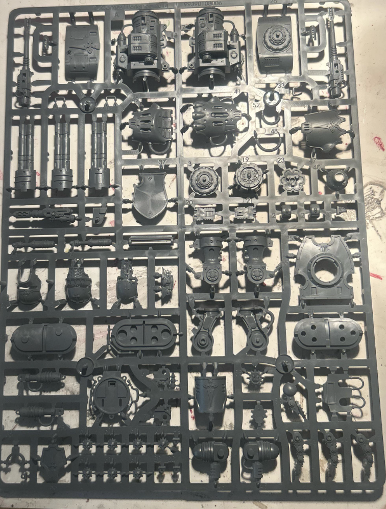
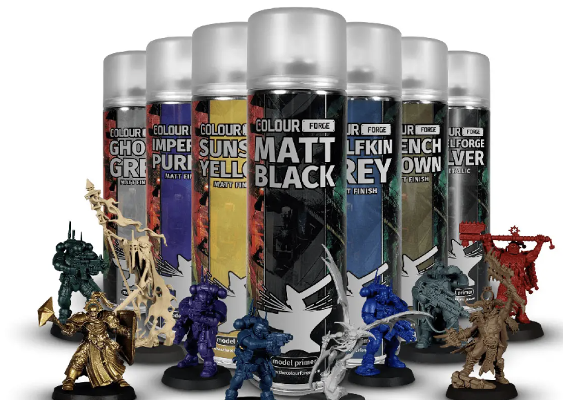
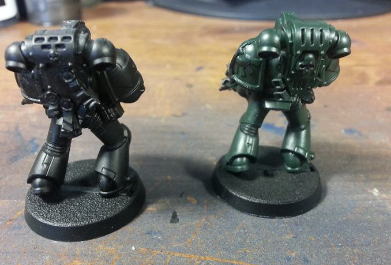
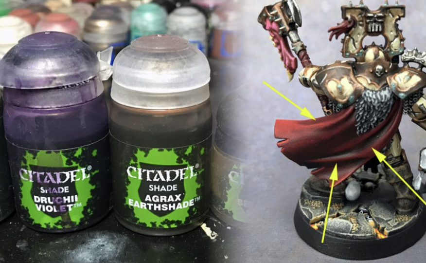
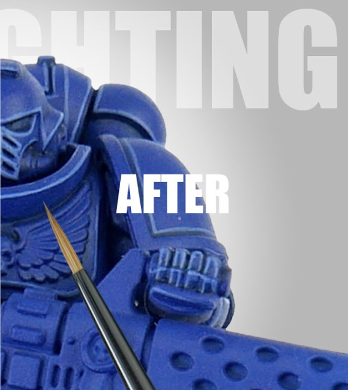
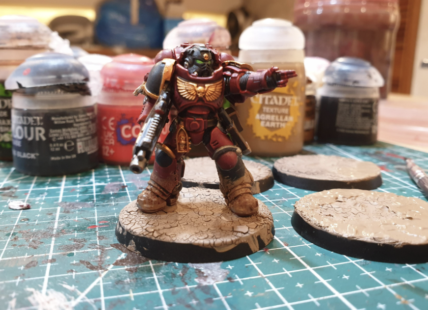

Start Your Painting Journey
Painting Warhammer miniatures is a rewarding hobby that brings your armies to life. Whether you're a beginner or a veteran, this guide will walk you through the essential steps to achieve tabletop-ready results.
1. Prepare Your Miniature
Clean mold lines with a hobby knife and wash the model in warm soapy water to remove residue. Assemble using plastic glue or super glue.
2. Prime the Model
Use a spray primer (black, white, or grey) to give your paints a surface to stick to. Black is great for a darker tone, white for brighter schemes.
3. Basecoat
Apply the main colors of your scheme using thin layers. Use a medium brush and water down your paints slightly for smooth coverage.
4. Wash and Shade
Apply washes like Nuln Oil or Agrax Earthshade to add depth and shadow to recesses. Let it dry fully before moving on.
5. Highlight and Detail
Use lighter tones to edge highlight armor and pick out details like eyes, weapons, and insignias. This step makes your mini pop on the tabletop.
6. Base the Model
Glue sand, texture paint, or tufts to the base. Paint it to match your army’s theme—urban rubble, desert, snow, or alien world.
🛠️ Pro Tips
- Use a wet palette to keep paints workable longer.
- Drybrush for quick highlights on textured surfaces.
- Varnish your mini with matte or gloss spray to protect your work.